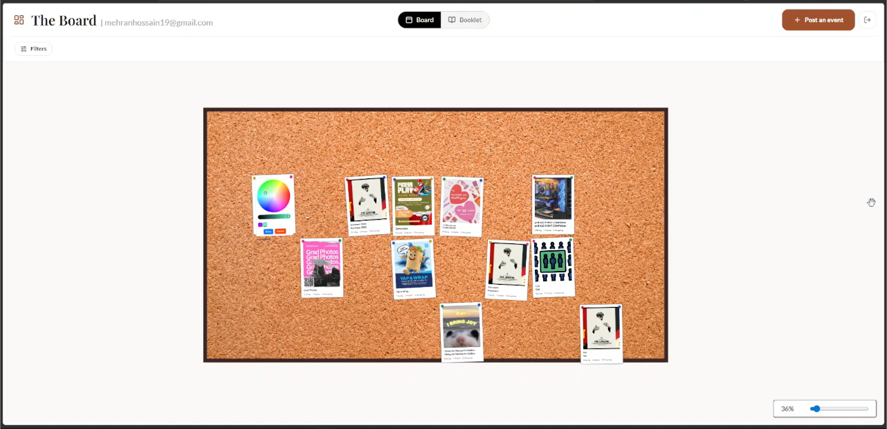

The Board: Virtual Campus Event Board

Overview
The Board is a virtual campus event board that serves as a central, interactive platform for campus events.
My team and I built The Board in 24 hours during devHacks 2026. This was something I wanted to do for a while as I personally struggled with keeping up with campus events. I try to use social media as little as possible, but most events are shared through Instagram stories (which aren't easy to keep track of and you have to follow like 15 different pages). While there is a UofM events page, it doesn't post all student events, people hardly use it, and it isn't cool and interactive like The Board.
Relevant Source: This reddit post (yes I'm citing reddit, don't tell my profs)
Try The Board yourself:
https://jointheboard.space/
(down for now)
Features
- Interactive Campus Board: The interface is designed to feel like a real-life campus bulletin board. Users can browse events and interact with them, making discovery more fun/engaging.
- Social Signal (Who is Going): Users can indicate whether they are attending an event, and others can see this. This gives users an idea of the event size and can help them decide whether to attend.
- Filtering and Discovery: Events can be filtered using tags, making it easier to find relevant activities based on interests.
- Posting Events: Students can create and share their own events, allowing the platform to capture both official and student-run activities.
- Booklet Mode: Users can switch to a booklet view to browse events in a more structured, list-like format.
Contribution
This project was inspired by my own experience of missing campus events and wanting a better way to keep track of them. During development, I focused mainly on designing the board and making it interactive.
One memorable challenge was how posters should be placed on the board. Instead of random placement, I used a probability-based approach that prioritizes filling the center area first, so the board feels more natural and visually balanced.
Ideally, users would be able to reposition posters themselves, but given the time constraints of the hackathon, this was a solution that worked well.
Demo
Takeaways
Building this in a 24-hour hackathon was a great experience. This was probably the most fun I had coding something as I got to build it with my friends from the HCI lab (thanks Simran, Emmanuel, Lara, and Melika!).
It pushed me to:
- Actually turn an idea into a working prototype
- Embrace chaos as I tried to learn React and Tailwind on the fly
- Collaborate closely with my (super supportive) team under time constraints
Future Direction
This is a project I believe could have real-world use.
We are currently exploring this idea further and have started conversations with our univerisity's student union about whether something like this could be implemented more broadly.
Since UofM is largely a commuter campus, it can be difficult for students to socialize There’s potential to expand The Board into a platform that actively supports this. Potential features could include:
- adding an event ideas space for informal meetups (e.g., group study sessions)
- introducing features that lower the barrier to interacting with other students
- improving visibility for smaller, community-driven events